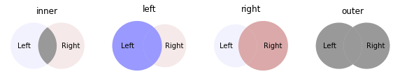
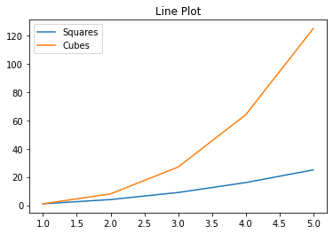
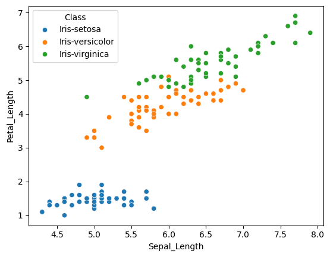
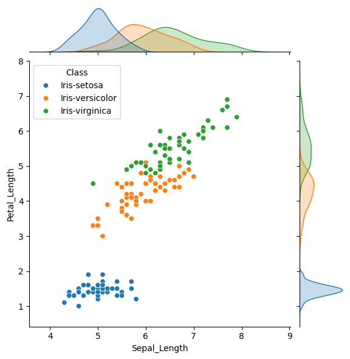
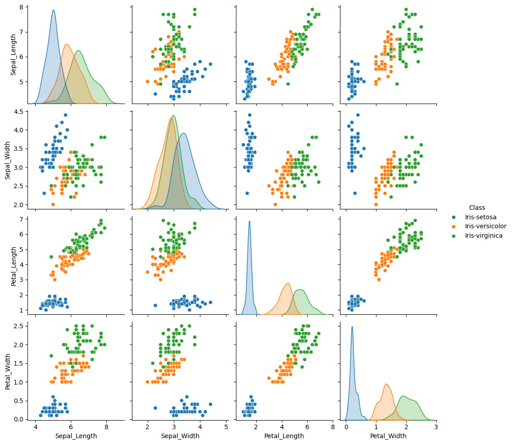
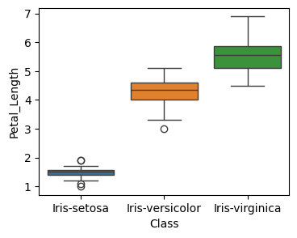
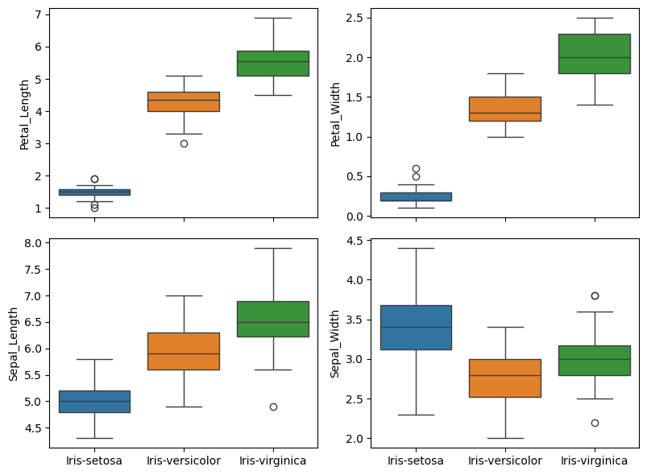
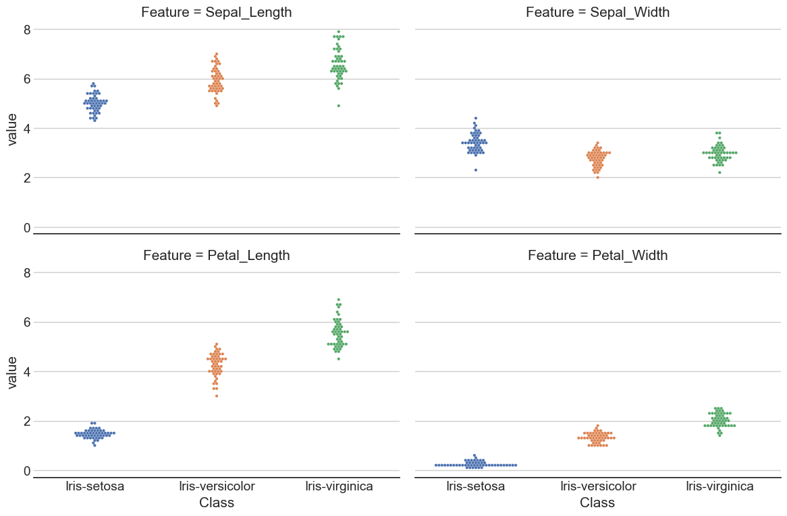

import pandas as pd13 Pandas
Pandas is a library that is useful for working with different types of datasets. A dataframe is a pandas object that has a variety of function to process, analyze, and visualize data. It arranges the data in rows and columns. There are multiple ways in which a dataframe can be created. For example, a dictionary with list as values can be converted to a dataframe such that the keys become headers and values (list) are entries in the dataframe. The orientation of the dataframe by default is columns ie keys are considered as column header and values are rows. This behaviour can be changed using the orient argument. When orientation is index, an addtional argument columns can be used to specify column headers.
input_dict = {'Column1': ['A','B','C','D','E'], \
'Column2':[1,2,3,4,5]}
df1 = pd.DataFrame.from_dict(input_dict)
df2 = pd.DataFrame.from_dict(input_dict, orient='index', columns=['Val1','Val2','Val3','Val4','Val5',])
display(df1)
display(df2)| Column1 | Column2 | |
|---|---|---|
| 0 | A | 1 |
| 1 | B | 2 |
| 2 | C | 3 |
| 3 | D | 4 |
| 4 | E | 5 |
| Val1 | Val2 | Val3 | Val4 | Val5 | |
|---|---|---|---|---|---|
| Column1 | A | B | C | D | E |
| Column2 | 1 | 2 | 3 | 4 | 5 |
print(df2.columns)Index(['Val1', 'Val2', 'Val3', 'Val4', 'Val5'], dtype='object')13.1 Indexing and Selecting
The data in a dataframes are arranged in rows and columns both of which have labels. The get a slice of a dataframe, these labels can used with the loc attribute. The columns and index attributes for a dataframe return an iteratable collection of column labels and index labels. To select a subset of a dataframe using indcies for the rows and columns use iloc. Both loc and iloc takes a slice of row label/range and column label/range. Note that a one-dimensional slice of a dataframe returns a Series object i.e. if we select one column or one row, a Series object would be returned. To convert a series object to a dataframe use to_frame function.
Multi-indexing is also possible i.e., a row or a column can have more than one label. In such cases, selections can be made by specifing labels as a tuple.
| Column1 | Column2 | |
|---|---|---|
| 0 | A | 1 |
| 1 | B | 2 |
| 2 | C | 3 |
| 3 | D | 4 |
| 4 | E | 5 |
df1.columns:
Index(['Column1', 'Column2'], dtype='object')
df1.index:
RangeIndex(start=0, stop=5, step=1)| Column1 | |
|---|---|
| 0 | A |
| 1 | B |
| 2 | C |
| 3 | D |
| 4 | E |
| Column1 | |
|---|---|
| 0 | A |
| 1 | B |
| 2 | C |
| 3 | D |
| 4 | E |
| Column1 | Column2 | |
|---|---|---|
| 2 | C | 3 |
| 3 | D | 4 |
| 4 | E | 5 |
| Column1 | Column2 | |
|---|---|---|
| 2 | C | 3 |
| 3 | D | 4 |
| 4 | E | 5 |
13.2 Dataframe information
Pandas offers set of commands to get some basic information about the content of dataframes. Below are some of these command along with their corresponding output.
| Column1 | Column2 | |
|---|---|---|
| 0 | A | 1 |
| 1 | B | 2 |
| 2 | C | 3 |
| 3 | D | 4 |
| 4 | E | 5 |
Information about this dataframe
df1.shape (5, 2)
df1.size 10
df1.ndim 2
df1.values [['A' 1]
['B' 2]
['C' 3]
['D' 4]
['E' 5]]
13.3 Data from (and to) a csv file
The read_csv() function can be used to create a dataframe from a csv file. To use one of the columns as indices for the dataframe add the index_col keyword attribute.
# %load test.csv
Name,Age,Country
Sohan,22,India
Sam,21,USAdf3 = pd.read_csv("test.csv")
df4 = pd.read_csv("test.csv", index_col="Country")
display(df3)
display(df4)| Name | Age | Country | |
|---|---|---|---|
| 0 | Sohan | 22 | India |
| 1 | Sam | 21 | USA |
| Name | Age | |
|---|---|---|
| Country | ||
| India | Sohan | 22 |
| USA | Sam | 21 |
To write a dataframe to a csv file use to_csv function. The default delimiter is , and can be changed with the sep argument.
df4.to_csv("output.csv")# %load output.csv
Country,Name,Age
India,Sohan,22
USA,Sam,2113.4 Combining dataframes
Pandas offers a variety of way to combine dataframes. These methods differ in the options in which the data from two or more dataframes can be combined. Having a good understanding of these functions is vital of effectively working with diverse datasets.
Concat
Pandas has a concat function that takes a list of dataframes and returns a combined dataframe. The axis argument indicates whether the dataframes would be combined across rows or columns. The default is axis=0 i.e. the dataframes are concatenated row-wise. The key argument can be used to add an additional index refering to each of the dataframe that is concatenated.
import numpy as np
df_1 = pd.DataFrame(np.random.uniform(1,2,size=(5, 4)), columns=list('ABCD'))
df_2 = pd.DataFrame(np.random.uniform(2,3,size=(5, 4)), columns=list('ABCD'))| A | B | C | D | |
|---|---|---|---|---|
| 0 | 1.710289 | 1.260774 | 1.047939 | 1.342935 |
| 1 | 1.539253 | 1.610440 | 1.608759 | 1.518317 |
| 2 | 1.471803 | 1.817016 | 1.757089 | 1.957877 |
| 3 | 1.621033 | 1.152500 | 1.237414 | 1.457109 |
| 4 | 1.671551 | 1.689427 | 1.698675 | 1.270451 |
| A | B | C | D | |
|---|---|---|---|---|
| 0 | 2.511460 | 2.394432 | 2.979061 | 2.699233 |
| 1 | 2.431831 | 2.324515 | 2.433901 | 2.839483 |
| 2 | 2.507918 | 2.410554 | 2.192603 | 2.818681 |
| 3 | 2.969286 | 2.182390 | 2.412281 | 2.181399 |
| 4 | 2.605576 | 2.750244 | 2.238079 | 2.926454 |
df_new = pd.concat([df_1,df_2],ignore_index=True)
display(df_new)| A | B | C | D | |
|---|---|---|---|---|
| 0 | 1.710289 | 1.260774 | 1.047939 | 1.342935 |
| 1 | 1.539253 | 1.610440 | 1.608759 | 1.518317 |
| 2 | 1.471803 | 1.817016 | 1.757089 | 1.957877 |
| 3 | 1.621033 | 1.152500 | 1.237414 | 1.457109 |
| 4 | 1.671551 | 1.689427 | 1.698675 | 1.270451 |
| 5 | 2.511460 | 2.394432 | 2.979061 | 2.699233 |
| 6 | 2.431831 | 2.324515 | 2.433901 | 2.839483 |
| 7 | 2.507918 | 2.410554 | 2.192603 | 2.818681 |
| 8 | 2.969286 | 2.182390 | 2.412281 | 2.181399 |
| 9 | 2.605576 | 2.750244 | 2.238079 | 2.926454 |
df_new = pd.concat([df_1,df_2],axis=1)
display(df_new)| A | B | C | D | A | B | C | D | |
|---|---|---|---|---|---|---|---|---|
| 0 | 1.710289 | 1.260774 | 1.047939 | 1.342935 | 2.511460 | 2.394432 | 2.979061 | 2.699233 |
| 1 | 1.539253 | 1.610440 | 1.608759 | 1.518317 | 2.431831 | 2.324515 | 2.433901 | 2.839483 |
| 2 | 1.471803 | 1.817016 | 1.757089 | 1.957877 | 2.507918 | 2.410554 | 2.192603 | 2.818681 |
| 3 | 1.621033 | 1.152500 | 1.237414 | 1.457109 | 2.969286 | 2.182390 | 2.412281 | 2.181399 |
| 4 | 1.671551 | 1.689427 | 1.698675 | 1.270451 | 2.605576 | 2.750244 | 2.238079 | 2.926454 |
df_new = pd.concat([df_1,df_2],keys=["First","Second"])
display(df_new)| A | B | C | D | ||
|---|---|---|---|---|---|
| First | 0 | 1.710289 | 1.260774 | 1.047939 | 1.342935 |
| 1 | 1.539253 | 1.610440 | 1.608759 | 1.518317 | |
| 2 | 1.471803 | 1.817016 | 1.757089 | 1.957877 | |
| 3 | 1.621033 | 1.152500 | 1.237414 | 1.457109 | |
| 4 | 1.671551 | 1.689427 | 1.698675 | 1.270451 | |
| Second | 0 | 2.511460 | 2.394432 | 2.979061 | 2.699233 |
| 1 | 2.431831 | 2.324515 | 2.433901 | 2.839483 | |
| 2 | 2.507918 | 2.410554 | 2.192603 | 2.818681 | |
| 3 | 2.969286 | 2.182390 | 2.412281 | 2.181399 | |
| 4 | 2.605576 | 2.750244 | 2.238079 | 2.926454 |
display(df_new.loc["First"])| A | B | C | D | |
|---|---|---|---|---|
| 0 | 1.710289 | 1.260774 | 1.047939 | 1.342935 |
| 1 | 1.539253 | 1.610440 | 1.608759 | 1.518317 |
| 2 | 1.471803 | 1.817016 | 1.757089 | 1.957877 |
| 3 | 1.621033 | 1.152500 | 1.237414 | 1.457109 |
| 4 | 1.671551 | 1.689427 | 1.698675 | 1.270451 |
Merge
The merge function in pandas is used combine two dataframes on one or more columns. The on argument takes name(s) of column or index levels to be merged. If on is None (default) then all the columns are considred and in case of identical columns, an intersection is performed. When on is specified and the merged dataframe results in duplicate column names then suffixes argument can be used to indicate the original datafames.
# read a csv file having following data
# Name,Age,Country
# Sohan,22,India
# Sam,21,USA
df3 = pd.read_csv("test.csv")
display(df3)
# make a copy of df3
df4 = df3.copy(deep=True)
# add rows to df4
df4.loc[2]=["Peter", 20, "UK"]
df4.loc[len(df4.index)] = ["Mohan", 25, "India"]
display(df4)
# merge dataframes
df_merged1 = pd.merge(df3,df4)
display(df_merged1)
df_merged2 = pd.merge(df3,df4,on=["Country","Name"],\
suffixes=('_df3', '_df4'))
display(df_merged2)| df3 | |||
|---|---|---|---|
| Name | Age | Country | |
| 0 | Sohan | 22 | India |
| 1 | Sam | 21 | USA |
| df4 | |||
|---|---|---|---|
| Name | Age | Country | |
| 0 | Sohan | 22 | India |
| 1 | Sam | 21 | USA |
| 2 | Peter | 20 | UK |
| 3 | Mohan | 25 | India |
| df_merged1 | |||
|---|---|---|---|
| Name | Age | Country | |
| 0 | Sohan | 22 | India |
| 1 | Sam | 21 | USA |
| df_merged2 | ||||
|---|---|---|---|---|
| Name | Age_df3 | Country | Age_df4 | |
| 0 | Sohan | 22 | India | 22 |
| 1 | Sam | 21 | USA | 21 |
Join
The join function for a dataframe oject is used to combine one or more dataframes. By default the joining is performed along the indcies and the lsuffix and rsuffix arguments can be used to modify column names. In this case, new columns from one of the dataframes are added to the other. The on keyword specifies the index label on which to join the dataframes.
The joining of dataframe can be performed with different logics in terms of how to handle the overlapping columns. The diagram below shows the pictorial representation of four options that we have. In these Venn diagrams the darker shade shows the subset that will be selected. Here left refers to the dataframe on which the join function is called and right is the dataframe which goes as the argument for the join function.

display(df3.join(df4,lsuffix='_df3', rsuffix='_df4'))| Name_df3 | Age_df3 | Country_df3 | Name_df4 | Age_df4 | Country_df4 | |
|---|---|---|---|---|---|---|
| 0 | Sohan | 22 | India | Sohan | 22 | India |
| 1 | Sam | 21 | USA | Sam | 21 | USA |
display(df3.set_index("Country"))| Name | Age | |
|---|---|---|
| Country | ||
| India | Sohan | 22 |
| USA | Sam | 21 |
To join df4 to df3 on Country, we need to set the index of df4 to Country. Note that there are two rows with index 0 because there is one row with India in df3 and two such rows in df_4. Also, in the joined dataframe there is no data for UK since there was no row in df3 with UK in Country column. This behaviour can be changed by adding the how argument to join function (see below).
display(df3.join(df4.set_index("Country"),on="Country", lsuffix='_df3', rsuffix='_df4'))| Name_df3 | Age_df3 | Country | Name_df4 | Age_df4 | |
|---|---|---|---|---|---|
| 0 | Sohan | 22 | India | Sohan | 22 |
| 0 | Sohan | 22 | India | Mohan | 25 |
| 1 | Sam | 21 | USA | Sam | 21 |
To get the joined dataframe with Country as index, set indcies for both the dataframes to Country.
display(df3.join(df4.set_index("Country"),on="Country", lsuffix='_df3', rsuffix='_df4', how='outer'))| Name_df3 | Age_df3 | Country | Name_df4 | Age_df4 | |
|---|---|---|---|---|---|
| 0.0 | Sohan | 22.0 | India | Sohan | 22 |
| 0.0 | Sohan | 22.0 | India | Mohan | 25 |
| 1.0 | Sam | 21.0 | USA | Sam | 21 |
| NaN | NaN | NaN | UK | Peter | 20 |
display(df3.set_index("Country").join(df4.set_index("Country"),on="Country", lsuffix='_df3', rsuffix='_df4', how="outer"))| Country | Name_df3 | Age_df3 | Name_df4 | Age_df4 | |
|---|---|---|---|---|---|
| India | India | Sohan | 22.0 | Sohan | 22 |
| India | India | Sohan | 22.0 | Mohan | 25 |
| USA | USA | Sam | 21.0 | Sam | 21 |
| NaN | UK | NaN | NaN | Peter | 20 |
13.5 Groupby
We can create groups for same values in a column to apply a function to all rows having a particular value.
students = [["Sam","Peter","Mohan", "Mike"], ["UG","PG","UG","PG"], [70,80,90,70]]
df_students = pd.DataFrame(students).T
df_students.columns=["Name","Program","Marks"]
display(df_students)| Name | Program | Marks | |
|---|---|---|---|
| 0 | Sam | UG | 70 |
| 1 | Peter | PG | 80 |
| 2 | Mohan | UG | 90 |
| 3 | Mike | PG | 70 |
df_students.set_index("Program", inplace=True)
display(df_students)| Name | Marks | |
|---|---|---|
| Program | ||
| UG | Sam | 70 |
| PG | Peter | 80 |
| UG | Mohan | 90 |
| PG | Mike | 70 |
df_students.groupby(level="Program")["Marks"].mean()Program
PG 75.0
UG 80.0
Name: Marks, dtype: float6413.6 Styling
The pandas dataframe has a style attribute that return a styler object which has different functions to customize dataframe display. E.g., to highlight minimun and maximum values in a dataframe, the hightlight_min and highlight_max functions for the styler object can be used. The min and max values can be selected column-wise or row-wise by setting the axis argument to 0 or 1, respectively. To highlight min or max value for the entire dataframe use axis = None. The props argument is used to set the highlight properties and takes a valid CSS (Cascading Style Sheet) property.
df_1 = pd.DataFrame(np.random.uniform(1,2,size=(5, 4)), columns=list('ABCD'))
display(df_1.style.highlight_max()\
.set_caption("Column-wise highlighting of maximum value"))
display(df_1.style.highlight_min(axis=1,props="font-weight:bold;background-color:pink;")\
.set_caption("Row-wise highlighting of minimum value"))| A | B | C | D | |
|---|---|---|---|---|
| 0 | 1.036642 | 1.265409 | 1.593481 | 1.470786 |
| 1 | 1.169744 | 1.747707 | 1.411616 | 1.924018 |
| 2 | 1.620145 | 1.927595 | 1.532973 | 1.063995 |
| 3 | 1.895642 | 1.669849 | 1.834086 | 1.254635 |
| 4 | 1.831751 | 1.220100 | 1.203569 | 1.954389 |
| A | B | C | D | |
|---|---|---|---|---|
| 0 | 1.036642 | 1.265409 | 1.593481 | 1.470786 |
| 1 | 1.169744 | 1.747707 | 1.411616 | 1.924018 |
| 2 | 1.620145 | 1.927595 | 1.532973 | 1.063995 |
| 3 | 1.895642 | 1.669849 | 1.834086 | 1.254635 |
| 4 | 1.831751 | 1.220100 | 1.203569 | 1.954389 |
We can also highlight all the values in a dataframe with color gradient. The coloring can be applied to the text or background. The cmap argument for background_gradient and text_gradient functions can be used to customize the coloring based on a colormap.
display(df_1.style.background_gradient()\
.set_caption("Column-wise background gradient")\
.set_properties(**{"font-weight":"bold", "padding":"1em"})\
.format("{:.2f}"))
display(df_1.style.text_gradient(axis=1, cmap="winter")\
.set_caption("Row-wise text gradient")\
.set_properties(**{"font-weight":"bold", "padding":"1em"})\
.format("{:.2f}"))| A | B | C | D | |
|---|---|---|---|---|
| 0 | 1.04 | 1.27 | 1.59 | 1.47 |
| 1 | 1.17 | 1.75 | 1.41 | 1.92 |
| 2 | 1.62 | 1.93 | 1.53 | 1.06 |
| 3 | 1.90 | 1.67 | 1.83 | 1.25 |
| 4 | 1.83 | 1.22 | 1.20 | 1.95 |
| A | B | C | D | |
|---|---|---|---|---|
| 0 | 1.04 | 1.27 | 1.59 | 1.47 |
| 1 | 1.17 | 1.75 | 1.41 | 1.92 |
| 2 | 1.62 | 1.93 | 1.53 | 1.06 |
| 3 | 1.90 | 1.67 | 1.83 | 1.25 |
| 4 | 1.83 | 1.22 | 1.20 | 1.95 |
Bar charts within dataframe
The values in a dataframe can be decorated with bar plots using the bar function for the styler object. In this example, we’ll display the dataframe after applying the following customizations:
- bar plots with custom color map.
- format the floats to display upto two decimal places.
- make the text bold.
- center align the text in the dataframe.
- hide the indcies.
df_bar = pd.DataFrame(np.random.uniform(-10,10,size=(5, 4)), columns=list('ABCD'))
from matplotlib.colors import ListedColormap
cmp = ListedColormap(["pink","lightblue"])
display(df_bar.style
.bar(vmin=-10, vmax=10, align=0, cmap=cmp)\
.format("{:.2f}")\
.set_properties(**{"font-weight":"bold", "text-align":"center"})\
.set_table_styles([dict(selector='th', props=[('text-align', 'center')])])\
.hide(axis="index")\
.set_caption("Dataframe with bar charts"))| A | B | C | D |
|---|---|---|---|
| -4.55 | -7.13 | -9.91 | -2.22 |
| -6.40 | 5.80 | -4.14 | 3.11 |
| -4.75 | 8.02 | -0.00 | 3.65 |
| -6.30 | -8.01 | 2.33 | -0.02 |
| -9.94 | 5.72 | 6.49 | 6.30 |
13.7 Ploting
Dataframe has a plot() function to do basic visualization. The kind attribute for this function can be used to change the plot type.
df_col1 = pd.DataFrame(np.array(range(1,6))**2)
df_col2 = pd.DataFrame(np.array(range(1,6))**3)
df_comb = pd.concat([df_col1,df_col2], axis=1, ignore_index=True)
df_comb.columns = ["Squares", "Cubes"]
df_comb.index = range(1,6)
display(df_comb)| Squares | Cubes | |
|---|---|---|
| 1 | 1 | 1 |
| 2 | 4 | 8 |
| 3 | 9 | 27 |
| 4 | 16 | 64 |
| 5 | 25 | 125 |
plot1 = df_comb.plot(title="Line Plot")
plot2 = df_comb.plot(kind="bar", title="Bar Plot")

The iris dataset
One of the popular datasets for learning data analysis is the iris dataset which has data for four iris flower features (sepal length, sepal width, petal length, and petal width). These data are there for the three species namely Iris setosa, Iris versicolour, and Iris virginica. Let’s import this data create a dataframe and practice data visualization.
csv_url = 'https://archive.ics.uci.edu/ml/machine-learning-databases/iris/iris.data'
# using the attribute information as the column names
col_names = ['Sepal_Length','Sepal_Width','Petal_Length','Petal_Width','Class']
iris = pd.read_csv(csv_url, names = col_names)display(iris)
print(iris.dtypes)| Sepal_Length | Sepal_Width | Petal_Length | Petal_Width | Class | |
|---|---|---|---|---|---|
| 0 | 5.1 | 3.5 | 1.4 | 0.2 | Iris-setosa |
| 1 | 4.9 | 3.0 | 1.4 | 0.2 | Iris-setosa |
| 2 | 4.7 | 3.2 | 1.3 | 0.2 | Iris-setosa |
| 3 | 4.6 | 3.1 | 1.5 | 0.2 | Iris-setosa |
| 4 | 5.0 | 3.6 | 1.4 | 0.2 | Iris-setosa |
| ... | ... | ... | ... | ... | ... |
| 145 | 6.7 | 3.0 | 5.2 | 2.3 | Iris-virginica |
| 146 | 6.3 | 2.5 | 5.0 | 1.9 | Iris-virginica |
| 147 | 6.5 | 3.0 | 5.2 | 2.0 | Iris-virginica |
| 148 | 6.2 | 3.4 | 5.4 | 2.3 | Iris-virginica |
| 149 | 5.9 | 3.0 | 5.1 | 1.8 | Iris-virginica |
150 rows × 5 columns
Sepal_Length float64
Sepal_Width float64
Petal_Length float64
Petal_Width float64
Class object
dtype: objectTo get the summary statistics for this dataset we’ll use the describe function for the iris dataframe. This function calculates different statistical parameters for all the columns with numeric data. Notice that this summary would be for the entire data and so might not be of much use. A better approach would be first aggreate the data by species so that we can get summary statistics for each species.
iris.describe()| Sepal_Length | Sepal_Width | Petal_Length | Petal_Width | |
|---|---|---|---|---|
| count | 150.000000 | 150.000000 | 150.000000 | 150.000000 |
| mean | 5.843333 | 3.054000 | 3.758667 | 1.198667 |
| std | 0.828066 | 0.433594 | 1.764420 | 0.763161 |
| min | 4.300000 | 2.000000 | 1.000000 | 0.100000 |
| 25% | 5.100000 | 2.800000 | 1.600000 | 0.300000 |
| 50% | 5.800000 | 3.000000 | 4.350000 | 1.300000 |
| 75% | 6.400000 | 3.300000 | 5.100000 | 1.800000 |
| max | 7.900000 | 4.400000 | 6.900000 | 2.500000 |
iris_grp = iris.groupby(by="Class")
iris_grp.describe()['Petal_Length']| count | mean | std | min | 25% | 50% | 75% | max | |
|---|---|---|---|---|---|---|---|---|
| Class | ||||||||
| Iris-setosa | 50.0 | 1.464 | 0.173511 | 1.0 | 1.4 | 1.50 | 1.575 | 1.9 |
| Iris-versicolor | 50.0 | 4.260 | 0.469911 | 3.0 | 4.0 | 4.35 | 4.600 | 5.1 |
| Iris-virginica | 50.0 | 5.552 | 0.551895 | 4.5 | 5.1 | 5.55 | 5.875 | 6.9 |
Seaborn library
The Seaborn library is data visualization library based on Matplotlib. This library is particularly suitable for ploting with dataframes. The libaray has been specifically designed and develop in way to focus on the data analysis rather than worrying about nuances of drawing plot.
import matplotlib.pyplot as plt
import seaborn as snsp1 = sns.scatterplot(data=iris,x="Sepal_Length",y="Petal_Length",hue="Class")
The seaborn library has dedicated functions to facilitate ploting informative visualizations. E.g., jointplot is used for rendering a scatter plot along with the corresponding data distributions. Similarly, pairplot can be used to render pairwise plots for all the numeric data in a dataframe.
plot1 = sns.jointplot(data=iris,x="Sepal_Length",y="Petal_Length",hue="Class")
plot2 = sns.pairplot(data=iris,hue="Class")

We can also visualize statistical information graphically, e.g. in the form of a boxplot. For instance, to see the distribution of the values for Petal_Length across the three iris species, we can make a boxplot as follows.
fig, ax = plt.subplots(figsize=(4,3))
sns.boxplot(data=iris,x="Class", y="Petal_Length", hue="Class", ax=ax)
plt.show()
Similarly, we can have separate boxplots for all four features as a grid.
fig, ax = plt.subplots(2, 2, figsize=(8,6), sharex=True)
sns.boxplot(data=iris,x="Class", y="Petal_Length", hue="Class", ax=ax[0,0]).set(xlabel='')
sns.boxplot(data=iris,x="Class", y="Petal_Width", hue="Class", ax=ax[0,1]).set(xlabel='')
sns.boxplot(data=iris,x="Class", y="Sepal_Length", hue="Class", ax=ax[1,0]).set(xlabel='')
sns.boxplot(data=iris,x="Class", y="Sepal_Width", hue="Class", ax=ax[1,1]).set(xlabel='')
plt.tight_layout()
plt.show()
Now, let’s say we want to have the boxplot plots for each of the feature grouped together i.e. a graph that shows four sets of boxplots with groups colored according to the species name.
For this kind of a plot, we first need to modify (or reformat) our dataframe so that its in the required format. Using the melt function in pandas, the original iris dataframe would be modified such that the values for all four flower features appear one per row. This would allow us to perform statistical calculations (required for boxplot) on all the feature and color the plot based on the species. Notice that the original iris dataframe’s shape is 150 X 5 (which implies a total of 600 datapoints since there are 4 data columns) while the melted dataframe’s shape is 600 X 3.
iris_melt = pd.melt(iris, id_vars=['Class'],\
value_vars=["Sepal_Length","Sepal_Width","Petal_Length","Petal_Width"],\
var_name='Feature')
iris_melt| Class | Feature | value | |
|---|---|---|---|
| 0 | Iris-setosa | Sepal_Length | 5.1 |
| 1 | Iris-setosa | Sepal_Length | 4.9 |
| 2 | Iris-setosa | Sepal_Length | 4.7 |
| 3 | Iris-setosa | Sepal_Length | 4.6 |
| 4 | Iris-setosa | Sepal_Length | 5.0 |
| ... | ... | ... | ... |
| 595 | Iris-virginica | Petal_Width | 2.3 |
| 596 | Iris-virginica | Petal_Width | 1.9 |
| 597 | Iris-virginica | Petal_Width | 2.0 |
| 598 | Iris-virginica | Petal_Width | 2.3 |
| 599 | Iris-virginica | Petal_Width | 1.8 |
600 rows × 3 columns
fig, ax = plt.subplots(figsize=(8,4))
plot3 = sns.boxplot(data=iris_melt,x="Feature", y="value",hue="Class", ax=ax)
The catplot function provides an intutive interface to visually analyze the relationship between numerical and categorical data. There are three different options for plot layout – scatter plot or distribution plot or estimate plot – each of which points to an axis-level plot function. The plot selection is made using the kind keyword argument. The table below shows the available options for the kind argument and their corresponding axis-level functions. The size of the plot can be adjusted using the height and aspect keyword arguments.
| Categorical plot |
kind
|
Axis-level function |
| Scatter plot | strip (default) | stripplot() |
| swarm | swarmplot() | |
| Distribution plot | box | boxplot() |
| violin | violinplot() | |
| boxen | boxenplot() | |
| Estimate plot | point | pointplot() |
| bar | barplot() | |
| count | countplot() |
The code below creates a violin plot using the above data. The x-axis label is removed using the set function for the FacetGrid object and the font size for all the labels is increase using the set_theme function from sns.
sns.set_theme(style="white", font_scale=1.5)
p2 = sns.catplot(data=iris_melt, x="Feature", y="value", kind="violin",
hue="Class", height=4, aspect=2)
p2.set(xlabel=None)
plt.show()
Similarly, we can make a swarm plot for each feature and color it by species. A swarm plot is like a scatterplot such that the position of the points are to avoid overlap. The catplot function returns a FacetGrid which can be customized to render desired representation. For our data there will be four plots in the facet grid which will be arranged as one row and four columns by default. The code below, makes a feature-wise swarm plot with two columns (col_warp=2) in the Facetgrid. The final plot has has two enhancements — 1) the veritcal line for the y-axis is removed and 2) the tick marks removed from both the axis and major grid lines shown for y-axis.
sns.set_theme(style="white", font_scale=1.25)
p2 = sns.catplot(data=iris_melt, x="Class", y="value", kind="swarm", size=3,
col="Feature", height=4, aspect=1.5, col_wrap=2, hue="Class", errorbar=None)
p2.despine(left=True)
for ax in p2.axes.flat:
ax.tick_params(axis='both', which='both', length=0)
ax.yaxis.grid(True)